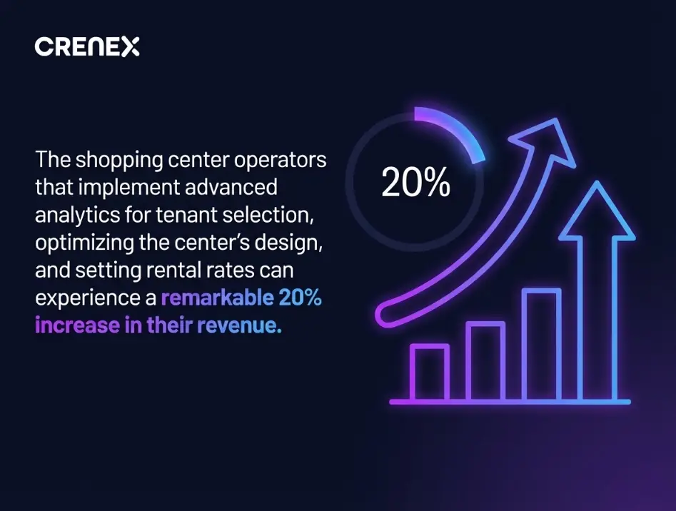

As we noted in a previous article, a sustained growth is expected in the short-term leasing market. However, this entails the need to increase focus on strategic planning, adaptability, and cutting-edge technology.
With the increase in competition, optimizing the management of lease contracts becomes essential to keep spaces occupied and maximize revenues. This is especially relevant in a rapidly evolving consumer environment, where customer experience and flexibility of spaces are crucial.
In this article, we will delve into the main challenges and opportunities in the sector, providing clear and practical strategies to optimize short-term lease management.
Challenges and Opportunities in Short-Term Leasing
Main Challenges
High Tenant Turnover: Tenant turnover occurs much more frequently with short-term leases than with long-term contracts, creating a range of administrative demands. An agile team with efficient processes is essential to avoid prolonged vacancies and transitions that can diminish profitability.
Document Management and Compliance: Each lease comes with a series of legal requirements, billing, and documentation that can become a significant operational burden without an automated system. Errors in managing these aspects can lead to delays, misunderstandings with tenants, and even penalties for non-compliance.
Adapting to Consumer Expectations: Shopping centers are in constant competition for customer attention and strive to stand out. In this regard, short-term leasing spaces are essential for providing unique experiences, pop-up shops, or events that drive traffic and generate sales. To achieve this, it is crucial for the team to have the ability to respond and adapt quickly to changing consumer preferences.
Opportunities in Optimizing Lease Management
Minimization of Vacancies: With an optimized leasing process and automation tools, the time between leases can be reduced, allowing available spaces to be filled more quickly and effectively.
Improvement in Customer Experience: With optimized management, shopping centers can adapt their spaces more rapidly and efficiently, keeping their offerings updated and attractive to customers. This also helps to generate loyalty and encourage frequent visits.
Increase in Efficiency and Profitability: By improving administrative efficiency and reducing errors in documentation and billing, shopping centers can maximize the revenue generated by each lease.
Effective strategies for implementing optimal short-term leasing management in shopping centers
Once the challenges and opportunities have been identified, it’s time to implement specific strategies that facilitate the management of short-term leases. The key is an approach that integrates both technology and team training to meet the demands of these temporary contracts.
1- Process Analysis and Team Training
Ongoing Training: Given the dynamic nature of short-term leases, it is essential for the team to receive training on best practices for tenant turnover and retention management. Additionally, becoming familiar with the technological tools used to optimize processes is key for them to work with greater accuracy and efficiency.
Identifying Bottlenecks: A thorough analysis of current processes allows for the identification of steps that cause delays or difficulties. This can include everything from contract signing to billing management and communication with tenants.

The shopping center operators that implement advanced analytics for tenant selection, optimizing the center’s design, and setting rental rates can experience a remarkable 20% increase in their revenue. After investigating various shopping centers that have successfully harnessed the potential of these analytics, McKinsey concluded that rental income grew by double digits in just five years. Source: McKinsey
2. Selection and Configuration of a Leasing Management Platform
To effectively tackle the challenges of short-term leasing, it is essential to have a comprehensive management platform that automates repetitive tasks and centralizes leasing information.
System Integration: The platform should be capable of integrating with other systems, such as CRM and accounting, to ensure that tenant data, contract details, and billing are consolidated in one place. This integration prevents task duplication and minimizes human errors.
Scalability and Flexibility: A good platform must adapt to the growth of the shopping center and the potential expansion of leasing areas. As the number of tenants increases, the system should be able to handle a larger volume of data and contracts without compromising operational efficiency.
Real-Time Data Access: Having updated information allows for proactive decision-making. This includes performance data for each lease, occupancy rates, and consumer preferences, facilitating more agile and results-oriented management.
2025 will be a pivotal year to invest in automation that facilitates data management, as it is projected that 65% of organizations will be fully data-driven by 2026.
Source: Cloud Talk
3. Maximizing Results with Performance Metrics
Technological tools alone do not guarantee success. Investment in technology must be complemented by continuous measurement and evaluation of the platforms to be used.
In this context, defining key indicators, such as the occupancy time of spaces or the tenant retention rate, allows for the assessment of the impact of new tools and training on team efficiency.
2025 Trends for Optimizing Short-Term Leasing Management
With the constant evolution of the market, various trends are anticipated that will impact leasing management and should be leveraged to optimize processes. Here are two key points:
Personalization of the Customer Experience: Data allows for the analysis of consumption patterns and the adaptation of spaces to the preferences of local customers, such as the inclusion of pop-up shops or collaborations with trending brands that capture public interest.
Complete Digitalization: By 2025, it is expected that the majority of shopping centers will adopt digital platforms for leasing management, facilitating contract administration, occupancy control, and billing, which improves the experience for both tenants and the management team.
Traditionally, lease abstraction relies on manual analysis, requiring trained professionals to meticulously review documents, identify key clauses, and extract critical information. This labor-intensive process is slow and can take up to 80% of an analyst’s time.
Source: Cushman&Wakefield
Would you like to explore more trends in short-term leasing for 2025? We suggest reading: Trends in the Short-term Leasing Market: Key Insights for 2025.
Optimize short-term leasing management in shopping centers with Crenex
The management of short-term leasing in shopping centers is undergoing a transformation driven by digitalization, automation, and favorable market trends.

By leveraging these opportunities, centers can not only reduce vacancies and maximize revenue but also efficiently respond to the changing expectations of consumers.
In this context, implementing advanced solutions like those offered by CRENEX enables shopping centers to effectively navigate a dynamic environment, enhance tenant satisfaction, and maximize profitability.
Want to learn more about our services? Request a demo now.